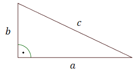

Twierdzenie Pitagorasa najczęściej wykorzystujemy do obliczenia długości trzeciego
boku trójkąta prostokątnego, w sytuacji gdy znamy długości dwóch pozostałych boków.
Twierdzenie
Jeśli trójkąt jest prostokątny, to suma kwadratów długości przyprostokątnych
jest równa kwadratowi długości przeciwprostokątnej.  \[a^2+b^2=c^2\]
Oblicz długość przeciwprostokątnej poniższego trójkąta prostokątnego.
Oznaczamy długość przeciwprostokątnej np. literką \(c\). Układamy równanie z
Twierdzenia Pitagorasa: \[4^2 + 3^2 = c^2\] Rozwiązujemy równanie: \[\begin{split} 16 + 9 &=
c^2\\[6pt] 25 &= c^2\\[6pt] c^2 &= 25\\[6pt] c &= 5 \end{split}\]
Długość przeciwprostokątnej wynosi \(5\).
Oblicz długość trzeciego boku trójkąta przedstawionego na rysunku.
Oznaczamy długość nieznanej przyprostokątnej np. literką \(x\). Układamy równanie
z Twierdzenia Pitagorasa: \[x^2 + 6^2 = 7^2\] Rozwiązujemy równanie: \[\begin{split} x^2 + 36 &=
49\\[6pt] x^2 &= 49 - 36\\[6pt] x^2 &= 13\\[6pt] x &= \sqrt{13} \end{split}\]
Długość przyprostokątnej wynosi \(\sqrt{13}\).